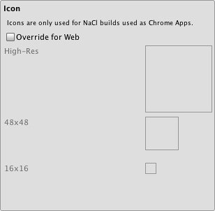
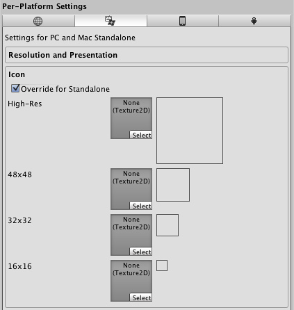
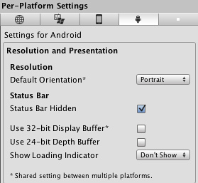
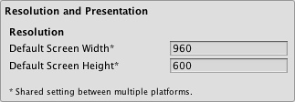
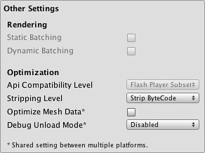

Player Settings
Player Settings is where you define various parameters (platform specific) for the final game that you will build in Unity. Some of these values for example are used in the Resolution Dialog that launches when you open a standalone game, others are used by XCode when building your game for the iOS devices, so it's important to fill them out correctly.
To see the Player Settings choose from the menu bar.

Global Settings that apply to any project you create.
| Cross-Platform Properties | |
|---|---|
| Company Name | The name of your company. This is used to locate the preferences file. |
| Product Name | The name that will appear on the menu bar when your game is running and is used to locate the preferences file also. |
| Default Icon | Default icon the application will have on every platform (You can override this later for platform specific needs). |
Per-Platform Settings
 Desktop
Desktop
Web-Player
Resolution And Presentation

| Resolution | |
| Default Screen Width | Screen Width the player will be generated with. |
| Default Screen Height | Screen Height the plater will be generated with. |
| Run in background | Check this if you dont want to stop executing your game if the player looses focus. |
| WebPlayer Template | For more information you should check the "Using WebPlayer templates page", note that for each built-in and custom template there will be an icon in this section. |
Icon

Icons don't have any meaning for most webplayer builds but they are needed for Native Client builds used as Chrome applications. You can set these icons here.
Other Settings

| Rendering | |
| Rendering Path | This property is shared between Standalone and WebPlayer content. |
| Vertex Lit | Lowest lighting fidelity, no shadows support. Best used on old machines or limited mobile platforms. |
| Forward with Shaders | Good support for lighting features; limited support for shadows. |
| Deferred Lighting | Best support for lighting and shadowing features, but requires certain level of hardware support. Best used if you have many realtime lights. Unity Pro only. |
| Color Space | The color space to be used for rendering |
| GammaSpace Rendering | Rendering is gamma-corrected |
| Linear Rendering Hardware Sampling | Rendering is done in linear space |
| Static Batching | Set this to use Static batching on your build (Inactive by default in webplayers). Unity Pro only. |
| Dynamic Batching | Set this to use Dynamic Batching on your build (Activated by default). |
| Streaming | |
| First Streamed Level | If you are publishing a Streamed Web Player, this is the index of the first level that will have access to all Resources.Load assets. |
| Optimization | |
| Optimize Mesh Data | Remove any data from meshes that is not required by the material applied to them (tangents, normals, colors, UV). |
| Debug Unload Mode | Output debugging information regarding Resources.UnloadUnusedAssets. |
| Disabled | Don't output any debug data for UnloadUnusedAssets. |
| Overview only | Minimal stats about UnloadUnusedAssets usage. |
| Full (slow) | Output overview stats along with stats for all affected objects. This option can slow down execution due to the amount of data being displayed. |
Standalone
Resolution And Presentation

| Resolution | |
| Default Screen Width | Screen Width the stand alone game will be using by default. |
| Default Screen Height | Screen Height the plater will be using by default. |
| Run in background | Check this if you dont want to stop executing your game if it looses focus. |
| Standalone Player Options | |
| Default is Full Screen | Check this if you want to start your game by default in full screen mode. |
| Capture Single Screen | If enabled, standalone games in fullscreen mode will not darken the secondary monitor in multi-monitor setups. |
| DisplayResolution Dialog | |
| Disabled | No resolution dialog will appear when starting the game. |
| Enabled | Resolution dialog will always appear when the game is launched. |
| Hidden by default | The resolution player is possible to be opened only if you have pressed the "alt" key when starting the game. |
| Use Player Log | Write a log file with debugging information. If you plan to submit your application to the Mac App Store you will want to leave this option un-ticked. Ticked is the default. |
| Mac App Store Validation | Enable receipt validation for the Mac App Store. |
| Supported Aspect Ratios | Aspect Ratios selectable in the Resolution Dialog will be monitor-supported resolutions of enabled items from this list. |
Icon

| Override for Standalone | Check if you want to assign a custom icon you would like to be used for your standalone game. Different sizes of the icon should fill in the squares below. |
Splash Image

| Config Dialog Banner | Add your custom splash image that will be displayed when the game is starting. |
Other Settings

| Rendering | |
| Rendering Path | This property is shared between Standalone and WebPlayer content. |
| Vertex Lit | Lowest lighting fidelity, no shadows support. Best used on old machines or limited mobile platforms. |
| Forward with Shaders | Good support for lighting features; limited support for shadows. |
| Deferred Lighting | Best support for lighting and shadowing features, but requires certain level of hardware support. Best used if you have many realtime lights. Unity Pro only. |
| Color Space | The color space to be used for rendering |
| GammaSpace Rendering | Rendering is gamma-corrected |
| Linear Rendering Hardware Sampling | Rendering is done in linear space |
| Static Batching | Set this to use Static batching on your build (Inactive by default in webplayers). Unity Pro only. |
| Dynamic Batching | Set this to use Dynamic Batching on your build (Activated by default). |
| Optimization | |
| API Compatibility Level | |
| .Net 2.0 | .Net 2.0 libraries. Maximum .net compatibility, biggest file sizes |
| .Net 2.0 Subset | Subset of full .net compatibility, smaller file sizes |
| Optimize Mesh Data | Remove any data from meshes that is not required by the material applied to them (tangents, normals, colors, UV). |
| Debug Unload Mode | Output debugging information regarding Resources.UnloadUnusedAssets. |
| Disabled | Don't output any debug data for UnloadUnusedAssets. |
| Overview only | Minimal stats about UnloadUnusedAssets usage. |
| Full (slow) | Output overview stats along with stats for all affected objects. This option can slow down execution due to the amount of data being displayed. |
Android
Resolution And Presentation

Resolution and presentation for your Android project builds.
Resolution and presentation for your Android project builds.
| Resolution | |
| Default Orientation | (This setting is shared between iOS and Android devices) |
| Portrait | The device is in portrait mode, with the device held upright and the home button at the bottom. |
| Portrait Upside Down | The device is in portrait mode but upside down, with the device held upright and the home button at the top (only available with Android OS 2.3 and later). |
| Landscape Right | The device is in landscape mode, with the device held upright and the home button on the left side (only available with Android OS 2.3 and later). |
| Landscape Left | The device is in landscape mode, with the device held upright and the home button on the right side. |
| Use 32-bit Display Buffer | Specifies if Display Buffer should be created to hold 32-bit color values (16-bit by default). Use it if you see banding, or need alpha in your ImageEffects, as they will create RTs in same format as Display Buffer. Not supported on devices running pre-Gingerbread OS (will be forced to 16-bit). |
| Use 24-bit Depth Buffer | If set Depth Buffer will be created to hold (at least) 24-bit depth values. Use it only if you see 'z-fighting' or other artifacts, as it may have performance implications. |
| Icon | |

Different icons that your project will have when built.
| Override for Android | Check if you want to assign a custom icon you would like to be used for your Android game. Different sizes of the icon should fill in the squares below. |
| Splash Image | |

Splash image that is going to be displayed when your project is launched.
| Mobile Splash Screen (Pro-only feature) | Specifies texture which should be used by the iOS Splash Screen. Standard Splash Screen size is 320x480.(This is shared between Android and iOS) |
| Splash Scaling | Specifies how will be the splash image scaling on the device. |
| Other Settings | |

| Rendering | |
| Static Batching | Set this to use Static batching on your build (Activated by default). Pro-only feature. |
| Dynamic Batching | Set this to use Dynamic Batching on your build (Activated by default). |
| Identification | |
| Bundle Identifier | The string used in your provisioning certificate from your Apple Developer Network account(This is shared between iOS and Android) |
| Bundle Version | Specifies the build version number of the bundle, which identifies an iteration (released or unreleased) of the bundle. This is a monotonically increased string, comprised of one or more period-separated(This is shared between iOS and Android) |
| Bundle Version Code | An internal version number. This number is used only to determine whether one version is more recent than another, with higher numbers indicating more recent versions. This is not the version number shown to users; that number is set by the versionName attribute. The value must be set as an integer, such as "100". You can define it however you want, as long as each successive version has a higher number. For example, it could be a build number. Or you could translate a version number in "x.y" format to an integer by encoding the "x" and "y" separately in the lower and upper 16 bits. Or you could simply increase the number by one each time a new version is released. |
| Configuration | |
| Device Filter | Specifies the target architecture you are going to build for. |
| ARMv7 only | Application optimized for ARMv7 CPU architecture. It will also enable correct Android Market device filtering, thus recommended for publishing to the Android Market (only devices supporting Unity Android will list the application on the Android Market). |
| Graphics Level | Select either ES 1.1 ('fixed function') or ES 2.0 ('shader based') Open GL level. When using the AVD (emulator) only ES 1.x is supported. |
| Install Location | Specifies application install location on the device (for detailed information, please refer to http://developer.android.com/guide/appendix/install-location.html). |
| Automatic | Let OS decide. User will be able to move the app back and forth. |
| Prefer External | Install app to external storage (SD-Card) if possible. OS does not guarantee that will be possible; if not, the app will be installed to internal memory. |
| Force Internal | Force app to be installed into internal memory. User will be unable to move the app to external storage. |
| Internet Access | When set to Require, will enable networking permissions even if your scripts are not using this. Automatically enabled for development builds. |
| Write Access | When set to External (SDCard), will enable write access to external storage such as the SD-Card. Automatically enabled for development builds. |
| Optimization | |
| Api Compatibility Level | Specifies active .NET API profile |
| .Net 2.0 | .Net 2.0 libraries. Maximum .net compatibility, biggest file sizes |
| .Net 2.0 Subset | Subset of full .net compatibility, smaller file sizes |
| Stripping Level (Pro-only feature) | Options to strip out scripting features to reduce built player size(This setting is shared between iOS and Android Platforms) |
| Disabled | No reduction is done. |
| Strip Assemblies | Level 1 size reduction. |
| Strip ByteCode (iOS only) | Level 2 size reduction (includes reductions from Level 1). |
| Use micro mscorlib | Level 3 size reduction (includes reductions from Levels 1 and 2). |
| Enable "logcat" profiler | Enable this if you want to get feedback from your device while testing your projects. So adb logcat prints logs from the device to the console (only available in development builds). |
| Optimize Mesh Data | Remove any data from meshes that is not required by the material applied to them (tangents, normals, colors, UV). |
| Debug Unload Mode | Output debugging information regarding Resources.UnloadUnusedAssets. |
| Disabled | Don't output any debug data for UnloadUnusedAssets. |
| Overview only | Minimal stats about UnloadUnusedAssets usage. |
| Full (slow) | Output overview stats along with stats for all affected objects. This option can slow down execution due to the amount of data being displayed. |
| Publishing Settings |
|---|

Publishing settings for Android Market
| Keystore | |
| Use Existing Keystore / Create New Keystore | Use this to choose whether to create a new Keystore or use an existing one. |
| Browse Keystore | Lets you select an existing Keystore. |
| Keystore password | Password for the Keystore. |
| Confirm password | Password confirmation, only enabled if the Create New Keystore option is chosen. |
| Key | |
| Alias | Key alias |
| Password | Password for key alias |
Note that for security reasons, Unity will save neither the keystore password nor the key password.
| Split Application Binary | Split application binary into expansion files, for use with Google Play Store if application is larger than 50 MB. When enabled the player executable and data will be split up, with a generated .apk consisting only of the executable (Java and Native) code (~10MB), and the data for the first scene. The application data will be serialized separately to an APK Expansion File (.obb). |
Flash
Resolution And Presentation

| Resolution | |
| Default Screen Width | Screen Width the player will be generated with. |
| Default Screen Height | Screen Height the plater will be generated with. |
Other Settings

| Optimization | |
| Stripping | Bytecode can optionally be stripped during the build. |
| Optimize Mesh Data | Remove any data from meshes that is not required by the material applied to them (tangents, normals, colors, UV). |
| Debug Unload Mode | Output debugging information regarding Resources.UnloadUnusedAssets. |
| Disabled | Don't output any debug data for UnloadUnusedAssets. |
| Overview only | Minimal stats about UnloadUnusedAssets usage. |
| Full (slow) | Output overview stats along with stats for all affected objects. This option can slow down execution due to the amount of data being displayed. |
Details
Desktop
The Player Settings window is where many technical preference defaults are set. See also Quality Settings where the different graphics quality levels can be set up.
Publishing a web player
Default Web Screen Width and Default Web Screen Height determine the size used in the html file. You can modify the size in the html file later.
Default Screen Width and Default Screen Height are used by the Web Player when entering fullscreen mode through the context menu in the Web Player at runtime.
Customizing your Resolution Dialog

The Resolution Dialog, presented to end-users
You have the option of adding a custom banner image to the Screen Resolution Dialog in the Standalone Player. The maximum image size is 432 x 163 pixels. The image will not be scaled up to fit the screen selector. Instead it will be centered and cropped.
Publishing to Mac App Store
Use Player Log enables writing a log file with debugging information. This is useful to find out what happened if there are problems with your game. When publishing games for Apple's Mac App Store, it is recommended to turn this off, because Apple may reject your submission otherwise. See this manual page for further information about log files.
Use Mac App Store Validation enables receipt validation for the Mac App Store. If this is enabled, your game will only run when it contains a valid receipt from the Mac App Store. Use this when submitting games to Apple for publishing on the App Store. This prevents people from running the game on any computer then the one it was purchased on. Note that this feature does not implement any strong copy protection. In particular, any potential crack against one Unity game would work against any other Unity content. For this reason, it is recommended that you implement your own receipt validation code on top of this using Unity's plugin feature. However, since Apple requires plugin validation to initially happen before showing the screen setup dialog, you should still enable this check, or Apple might reject your submission.
Android
Bundle Identifier
The Bundle Identifier string is the unique name of your application when published to the Android Market and installed on the device. The basic structure of the identifier is com.CompanyName.GameName, and can be chosen arbitrarily. In Unity this field is shared with the iOS Player Settings for convenience.
Stripping Level (Pro-only)
Most games don't use all the functionality of the provided dlls. With this option, you can strip out unused parts to reduce the size of the built player on Android devices.
Page last updated: 2012-11-16